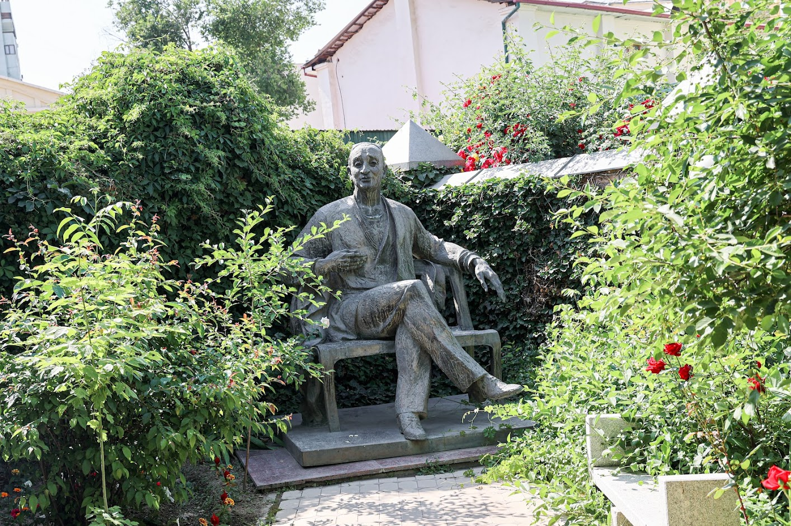
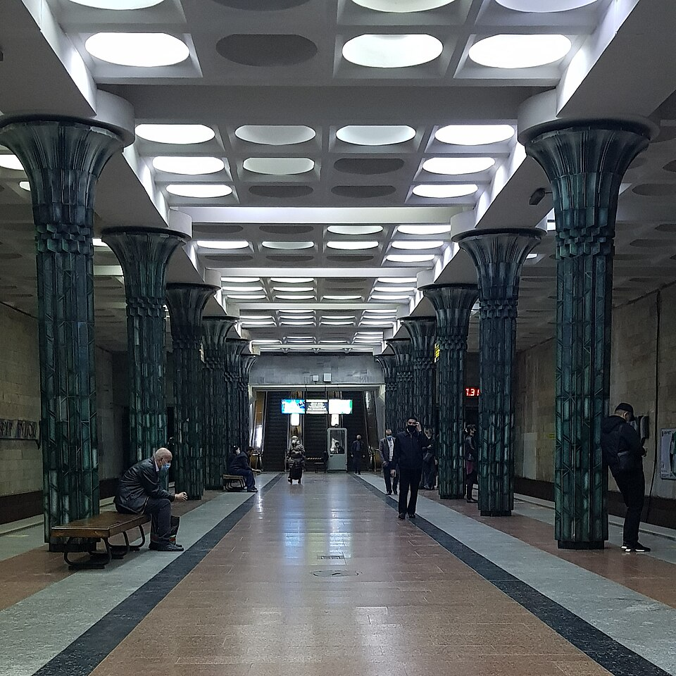
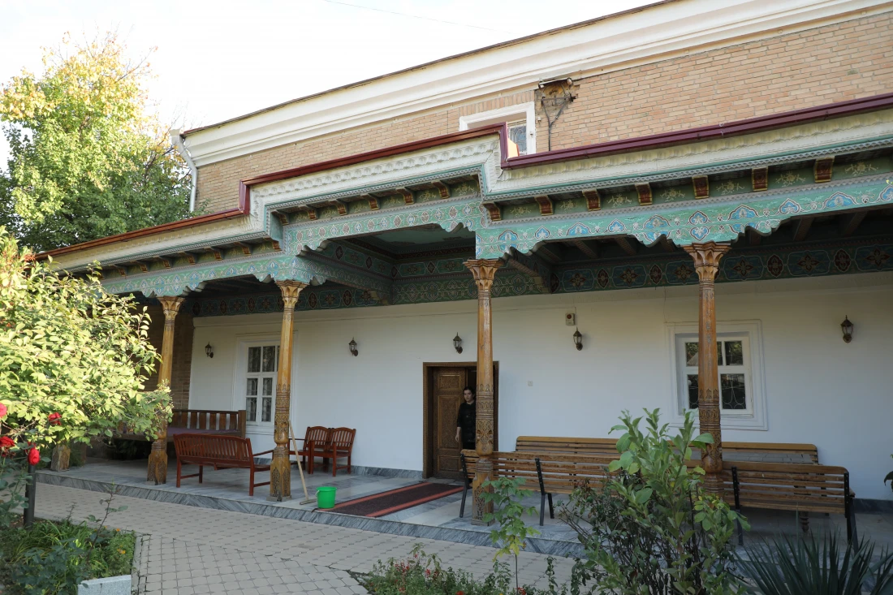
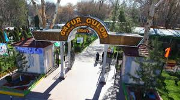

G'afur G'ulom hayoti va ijodi
1903-yil 10-may Toshkent shahrining Qo'rg'ontegi mahallasida tavvalud topgan
- „Hiylai shar'iy“ (1930), „Netay“ (1930)
- „Yodgor“ (1936), „Shum bola“ (1936-1962)
- „Mening o'g'rigina bolam“ (1965)
G'afur G'ulom 1966-yilning 10-iyunida vafot etdi
Ko'proq bilib olingHikoyalar
She'riy to'plsmlari
She'rlari
Asarlar
G'afur G'ulom
Turmush o'rtog'i Muharram opa,1995 yilda vafot etgan, O'zbekistonning atoqli davlat arbobi bo'lgan.O'g'li-Ulug' G'ulomov (1933 yil 1 oktyabr - 1990 yil 15 martda vafot etgan), yadro fizigi, O'zbekiston SSR FA akademigi, O'zbekiston SSR Fanlar akademiyasi Yadro fizikasi instituti direktori.O'g'li - Qodir G'ulomov (1945-yil 17-fevralda Toshkent shahrida tug'ilgan), ma'lumoti-yadro fizigi, O'zbekiston Fanlar akademiyasi muxbir a'zosi, Quyosh fizikasi instituti direktori, keyinroqi-O'zbekiston mudofaa vazirligining birinchi fuqarolik vaziri.Qizi - Olmos G'ofurovna Ahmedova G'ulomrassom, muzey direktori. G'afur Gulyama, uch farzandi bor, Durbek Qudrattilaevich Ahmedov-iqtisod fanlari doktori....
Otasi
G'ulom Mirza Orif rus tilini bilgan, she'r o'qishni yaxshi ko'rgan. U G'afur G'ulom atigi to'qqiz yoshida vafot etgan.
Onasi
G'afur G'ulomning onasi haqida ma'lumotlar ko'p emas.
O'g'li
Ulug' G'ulomov (1933 yil 1 oktyabr - 1990 yil 15 martda vafot etgan), yadro fizigi, O'zbekiston SSR FA akademigi
Ijodkor
Shoir xotirasini abadiylashtirish

G'afur G'ulom metrosi
1989-yil ishga tushgan.O'zbekiston metro liniyasida joylashgan.

G'afur G'ulom uy-muzeyi
Bu muzey ikki qavatli hovli-uyi Toshkentning Chilonzor tumanida joylashgan bo'lib, 1944-1966-yillarda adib u yerda yashab ijod qilgan.

G'afur G'ulom bog'i
Toshkentda Alisher Navoiy nomidagi milliy bog'dan keyin ikkinchi o'rinda turadi. Bog' bir qancha attraksionlar, jumladan, aylanma g'ildirak va mo'jazgina hayvonot bog'iga ham ega.